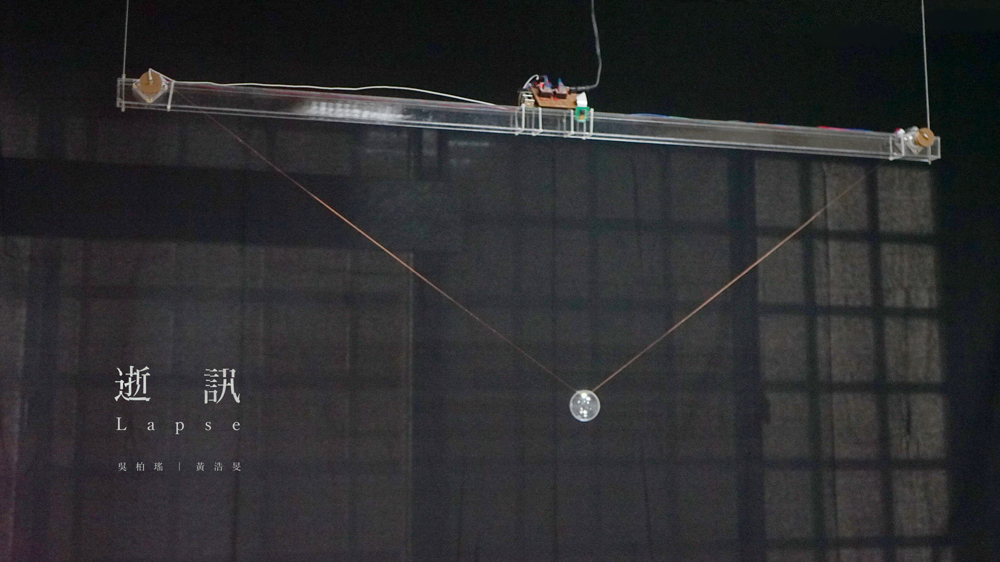
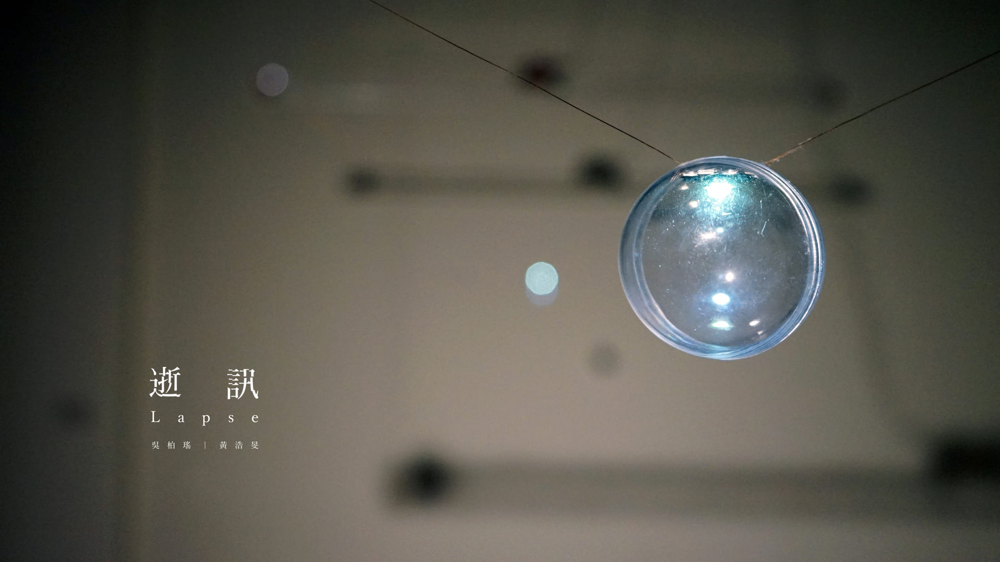
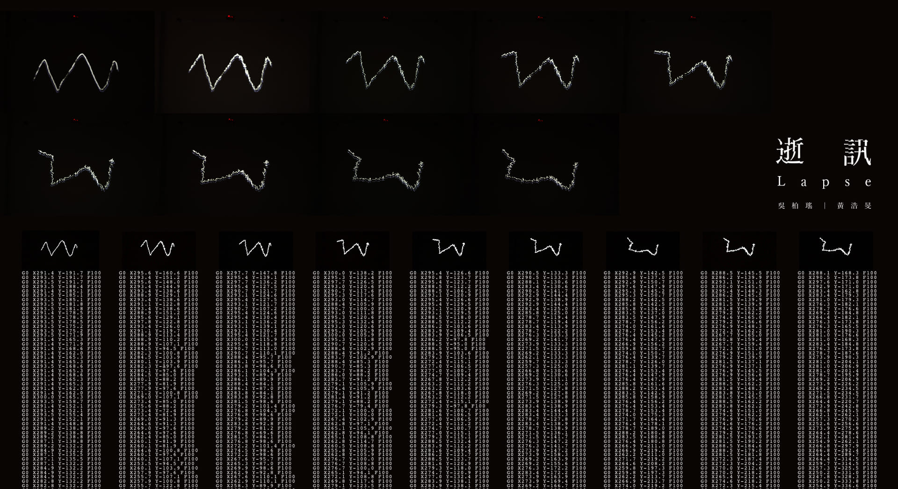

Real-time Dual Systems
V-Plotter Mechanism
Image Processing
Generative Behavior
Signal Degradation
Lapse investigates how information distorts as it travels between independent agents. Inspired by communication failures in biological and social systems, the project stages two identical robotic units—each equipped with a camera and light-drawing mechanism—to simulate visual perception and gestural expression. A light trace drawn by the participant becomes the first “message” in a continuous loop of sensing, decoding, and reenactment between the two machines. With each iteration, the signal drifts, breaks, or mutates, revealing how noise, environmental interference, and perceptual limits cause meaning to erode over time. Lapse visualizes the fragile, unstable nature of communication and highlights how misunderstanding, bias, and entropy emerge naturally within any exchange system.
Two Raspberry Pi–controlled devices—each combining a camera module with a motor-driven V-type plotter—operate as autonomous agents capable of capturing and reproducing light trajectories. A participant initiates interaction by drawing a light path in front of Device A. The system captures the gesture through high-frequency vision processing, translates it into G-code, and replays it via a suspended LED moved by custom reel mechanisms. Device B then records A’s output, processes it, and sends back its own reenactment.
This back-and-forth loop exposes accumulated distortion: air vibrations disrupt the floating LED, camera sampling breaks continuous lines into point clouds, and mechanical variation introduces micro-errors. Over time, the message diverges dramatically from the original input, producing a generative visual record of communicative degradation. The installation is shown in a dark room, where the LED’s nearly invisible wiring makes the drifting light appear suspended, emphasizing the work’s focus on ephemerality and loss.
  